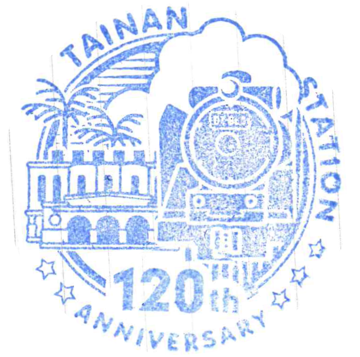

120th annniversary stamp
120th annniversary stamp with a different design
Trinket Type: Stamps
Location of collection: 22.9971° N, 120.2130° E
Year collected: 2024, May
Extra information: This array of celebratory stamps was collected at Tainan station. Although we may consider train or subway stations as “in between spaces”, a place before the main event, I think it's still merit in spending an extra moment looking around! It's thanks to these spaces that we may easily travel between neighborhoods, cities or even entire countries.
Stamp featuring a train

Stamp featuring the building facade
Stamp with a more scenery focused design
Stamp with a train, buildings and a woman